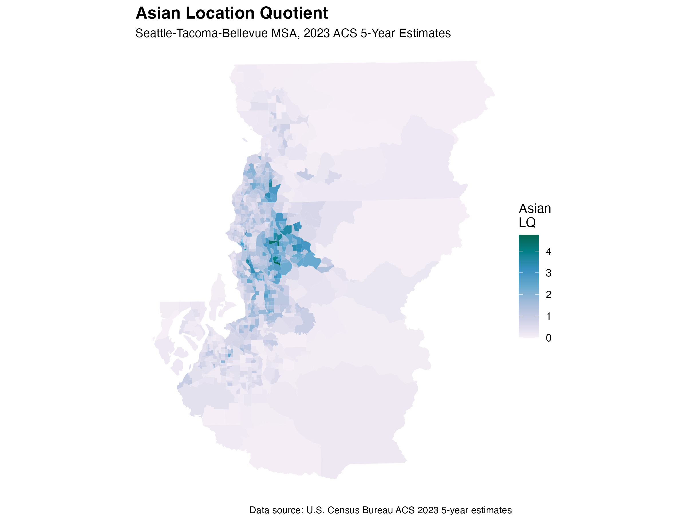

Lab 7: Segregation and Diversity
Hailey Rosquist
Course: GEOG 490/590
Geography of Interest
For this lab, I chose the Seattle-Tacoma-Bellevue MSA, represented by
King, Pierce, and Snohomish Counties in Washington. This region is useful
for studying segregation because it includes Seattle’s urban core,
surrounding suburbs, and nearby metropolitan communities with varied
racial and ethnic population patterns.
The analysis uses 2023 ACS 5-year Census tract data from table B03002.
The racial and ethnic groups included in the multigroup segregation
analysis are non-Hispanic white, non-Hispanic Black, non-Hispanic Asian,
and Hispanic residents.
1. Multigroup Segregation Index
I ran the multigroup segregation index using the mutual_total()
and mutual_local() functions from the segregation package. The map below shows
local multigroup segregation scores by Census tract. I used the ColorBrewer
YlOrRd color scheme.
Figure 1. Local Multigroup Segregation Index in the Seattle-Tacoma-Bellevue MSA

The local multigroup segregation index map shows that segregation is not
evenly distributed across the Seattle-Tacoma-Bellevue MSA. Some tracts have
higher local segregation values, meaning racial and ethnic groups are less
evenly distributed in those neighborhoods. Lower values appear in areas
with more mixed population patterns. These differences may reflect housing
costs, suburban growth, historical settlement patterns, and unequal access
to neighborhoods across the region.
2. Asian Location Quotient
For the location quotient analysis, I focused on the non-Hispanic Asian
population. This variable was chosen because the Seattle region has visible
Asian population clusters, making it useful for comparing local
concentration with the overall MSA average. The data come from the 2023 ACS
5 year survey. I used the ColorBrewer PuBuGn color scheme.
A location quotient value above 1 means a tract has a higher Asian
population share than the MSA overall. A value below 1 means the tract has
a lower Asian population share than the MSA average.
Figure 2. Asian Location Quotient in the Seattle-Tacoma-Bellevue MSA

The Asian location quotient map shows where Asian residents are more
concentrated compared with the overall MSA average. Tracts with higher
values have a larger Asian population share than the region as a whole.
These clusters partly align with the multigroup segregation map, but not
perfectly. This means Asian population concentration contributes to some
local segregation patterns, while the multigroup index also reflects the
distribution of white, Black, and Hispanic residents.
Conclusion
Overall, the two maps show related but different patterns. The multigroup
segregation index measures unevenness across several racial and ethnic
groups at once, while the Asian location quotient focuses only on one
group’s local concentration. Because of this, the maps overlap in some
areas but do not show identical patterns.